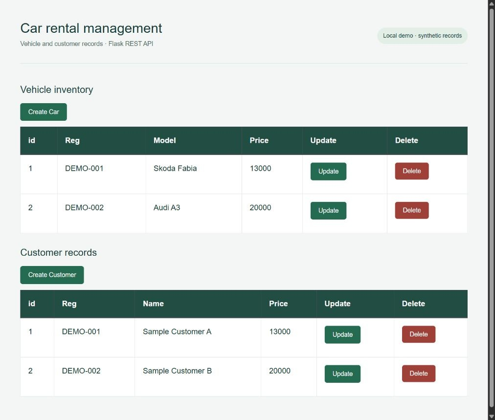

Car rental management.
A browser interface and REST API for managing vehicle and customer records.

What I built
Built a web application that connects a JavaScript interface to a Python API and relational database operations.
Why it matters
Everyday record management depends on clear workflows and consistent data. This prototype brings the interface, API and storage responsibilities together.
How it works
- 01
View vehicle and customer records in separate tables.
- 02
Create, update and delete records through asynchronous HTTP requests.
- 03
Use MySQL in the original application, or an explicit in-memory mode for a safe local demonstration.
What it demonstrates
Full-stack development, REST endpoints, relational data access and translating a record-management requirement into a usable interface.
Evidence, with context.
Verified car and customer create, read, update and delete operations using Flask tests. Missing records return 404; invalid record fields are rejected.
Scope and limitations
Academic prototype. The synthetic demo runs in memory and resets on restart. The original MySQL integration was inspected but not run against a live database. Authentication and deployment would need further work for real users.
Visual provenance and source attribution are recorded in the evidence register ↗.
Under the surface.
Architecture, methods and improvements
The existing data access classes remain in place for MySQL. An explicit DEMO_MODE selects a separate synthetic store. The homepage filename now matches case-sensitive filesystems; API error handling preserves 404 responses. Database initialization no longer drops an existing database.
Try it locally
Install requirements.txt. Set DEMO_MODE=1 in your local environment, then run python CarServer.py. Open http://127.0.0.1:5000. Run python -m unittest test_api.py.
The portfolio is a static GitHub Pages site. Server applications run locally; the portfolio does not collect bookings, credentials or payments.